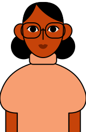
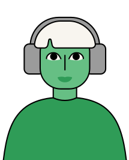
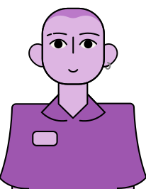
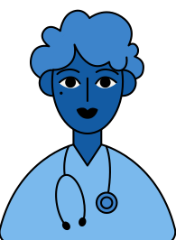
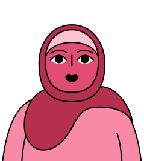

Launching February 2026!
About Know My Rights
Know My Rights is a national microlearning platform developed by Ausmed and funded by the NDIS.
Its purpose is to help NDIS participants, their families, carers, and providers understand their rights, recognise poor-quality care, and take confident action when something isn’t right.
The platform delivers accessible, inclusive, and engaging learning through short modules, without requiring sign-up or prior knowledge.
Why learn about your NDIS rights?
The National Disability Insurance Scheme (NDIS) exists to support people with disabilities, but understanding your rights is key to getting the most out of it.
When launched in February 2026, this platform will provide easy-to-follow learning to help you:
- Know what supports you are entitled to.
- Understand how to advocate for yourself or others.
- Take action when something isn’t right.
About Ausmed
Know My Rights is developed by Ausmed, an Australian leader in education for the disability, aged care, and health sectors.
We help organisations understand and meet their regulatory responsibilities through reliable, practical training trusted across the country.
The Know My Rights microleaning site has been designed for and by each of these audiences
-
For Participants
 -
For participants with an Intellectual Disability
 -
For providers and support workers
 -
For healthcare workers
 -
For family members and carers

Launching February 2026!